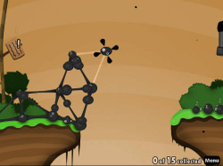

World of Goo
Dieser Artikel wurde für die folgenden Ubuntu-Versionen getestet:
Ubuntu 16.04 Xenial Xerus
Zum Verständnis dieses Artikels sind folgende Seiten hilfreich:
World of Goo  ist ein innovatives Geschicklichkeitsspiel des unabhängigen Zwei-Mann-Studios 2D Boy. Man muss kleine Schleimkugeln miteinander zu Türmen und anderen Konstruktionen verkleben, um das Spielziel zu erreichen. Dies besteht in der Regel darin, die Kugeln in die Nähe eines ansaugenden Rohres zu navigieren. Das Gameplay macht dabei intensiven Gebrauch von physikalischen Prinzipien wie Schwerkraft, Elastizität oder Auftrieb.
ist ein innovatives Geschicklichkeitsspiel des unabhängigen Zwei-Mann-Studios 2D Boy. Man muss kleine Schleimkugeln miteinander zu Türmen und anderen Konstruktionen verkleben, um das Spielziel zu erreichen. Dies besteht in der Regel darin, die Kugeln in die Nähe eines ansaugenden Rohres zu navigieren. Das Gameplay macht dabei intensiven Gebrauch von physikalischen Prinzipien wie Schwerkraft, Elastizität oder Auftrieb.
|  | ||
| Spielszene | Spielszene | Spielszene |
Das Spiel ist für Windows, Mac, Linux und Wii erhältlich. World of Goo ist keine freie Software und ist für ca. 20 US$ (umgerechnet etwa 15€) zu erwerben. Positiv zu erwähnen ist jedoch, dass es auf DRM, Lizenzkeys oder Produktaktivierungen verzichtet. Zudem lässt sich das Spiel an Hand einer Demoversion ausgiebig testen.
Installation¶
Die Installation der Demoversion und der Vollversion sind identisch, so dass die folgenden Ausführungen für beide Versionen gültig sind. Will man die Vollversion installieren und hat bereits die Demoversion installiert, so ist keine vorherige Deinstallation nötig. Die gespeicherten Einstellungen der Demoversion werden automatisch in die Vollversion übernommen.
Offizielle Homepage¶
Die Demoversion kann direkt von der offiziellen Homepage  als .deb-Datei (Version 1.41, 30 MB) heruntergeladen und installiert [1] werden. Auf der gleichen Seite kann die Vollversion online per PayPal oder Kreditkarte erworben werden, und unmittelbar nach Zahlungseingang erhält man per E-mail einen Downloadlink zu den Installationsdateien für Windows, Mac und Linux. Auch hier lädt man die .deb-Datei (Version 1.41, 60 MB) herunter und installiert diese. Nach der Installation ist diese Nacharbeit nötig, damit das Spiel startet.
als .deb-Datei (Version 1.41, 30 MB) heruntergeladen und installiert [1] werden. Auf der gleichen Seite kann die Vollversion online per PayPal oder Kreditkarte erworben werden, und unmittelbar nach Zahlungseingang erhält man per E-mail einen Downloadlink zu den Installationsdateien für Windows, Mac und Linux. Auch hier lädt man die .deb-Datei (Version 1.41, 60 MB) herunter und installiert diese. Nach der Installation ist diese Nacharbeit nötig, damit das Spiel startet.
Software-Center¶
Bis Ubuntu 14.04 kann man World Of Goo auch über das Software-Center käuflich erwerben. Dazu ist eine Registrierung bzw. ein Zugang über Ubuntu One erforderlich, welchen man sich aber auch während des Zahlungsprozesses über das Software-Center anlegen kann. Anschließend wird World Of Goo automatisch heruntergeladen und installiert. Für zukünftige Updates wird ebenfalls automatisch eine neue Paketquelle hinzugefügt. Für die Zahlung ist jedoch eine Kreditkarte erforderlich. Wer keine Kreditkarte hat, der sollte sich das Spiel über die offizielle Homepage kaufen und herunterladen.
Desura¶
Das Spiel kann über die Internetseite oder den Client zur Spieleliste hinzugefügt und gestartet werden [8].
Ubuntu Software-Center¶
World of Goo kann über das Software-Center käuflich erworben werden. Dazu ist eine Registrierung bzw. ein Zugang über Ubuntu One erforderlich, welchen man sich aber auch während des Zahlungsprozesses über das Software-Center anlegen kann. Anschließend wird das Spiel automatisch heruntergeladen und installiert. Für zukünftige Updates wird eine neue Paketquelle hinzugefügt.
Wine¶
Sofern man in Besitz der Windows-Version des Spiels ist, kann man diese ebenfalls unter Linux nutzen [5]. Dazu das .tar.gz-Archiv von der offiziellen Homepage herunterladen. Das Archiv entpacken [6], verschieben und verlinken [7]:
sudo mv WorldOfGooDemo/ /opt/WorldOfGoo sudo ln -s /opt/WorldOfGoo/WorldOfGoo /usr/local/bin/WorldOfGoo
Nun unter Wine [5] das Spiel ebenfalls aufspielen und alle Dateien aus dem Ordner C:\Program Files\2D Boy\World of Goo\res mit Root-Rechten nach /opt/WorldOfGoo/res kopieren. Die vorhandenen Dateien sind zu ersetzen.
Mit einem Editor [4] abschließend noch die Datei ~/Desktop/WorldOfGoo.desktop anlegen und abspeichern:
[Desktop Entry] Type=Application Version=1.0 Name=World of Goo Comment=A physics based puzzle/construction game Icon=/opt/WorldOfGoo/icons/48x48.png Exec=WorldOfGoo Categories=Game;Simulation
Nach diesem Vorgang steht einem die Vollversion für Linux zur Verfügung. Den Spieleordner /opt/WorldOfGoo kann man sich an anderer Stelle sichern.
Start¶
Nach der Installation befindet sich unter "Anwendungen -> Spiele" ein Starter für World of Goo. Alternativ kann man das Spiel auf der Konsole [2] gestartet [3] werden mit
WorldOfGoo
für die Vollversion, oder
WorldOfGooDemo
für die Demoversion.
Bedienung¶
Im Spiel stehen die folgenden Tastenkombinationen zur Verfügung:
| Bedienung | |
| Taste(n) | Funktion |
| Alt + ⏎ | Umschalten zwischen Vollbild und Fenster |
| Alt + M | Sound ein- und ausschalten |
| Alt + F4 | Beenden |
Wird das Spielfenster im Fenstermodus minimiert, so pausiert das Spiel automatisch.
Konfiguration¶
Leider gibt es kein spielinternes Einstellungsmenü, z.B. für die Bildschirmauflösung, so dass die Einstellungen für Grafik, Sound, Maus und Proxyserver durch Editieren [4] einer Konfigurationsdatei verändert werden müssen. Die globale Konfigurationsdatei befindet sich unter /opt/WorldOfGoo/properties/config.txt. Anstatt diese jedoch mit Rootrechten zu editieren, sollte man sie in das persönliche Verzeichnes des Benutzers kopieren. Dies geschieht auf der Konsole mit folgenden Befehlen:
mkdir ~/.WorldOfGoo cp -i /opt/WorldOfGoo/properties/config.txt ~/.WorldOfGoo
Nun lassen sich durch Editieren [4] der Datei .WorldOfGoo/config.txt im Homeverzeichnis die persönlichen Einstellungen modifizieren.
Sprache¶
World of Goo startet automatisch in der vom System verwendeten Sprache. Alternativ lässt sich eine bestimmte Sprache erzwingen, indem man in der Zeile
<param name="language" value="auto" />
in der Konfigurationsdatei den String "auto" durch eine der Sprachen "en", "de", "es", "fr", "it" oder "nl" ersetzt.
Grafik¶
Standardmäßig sind in der Konfigurationsdatei folgende Grafikeinstellungen eingetragen:
<param name="screen_width" value="800" /> <param name="screen_height" value="600" /> <param name="color_depth" value="0" /> <param name="fullscreen" value="true" /> <param name="ui_inset" value="10" />
In den ersten beiden Zeilen lässt sich die Bildschirmauflösung einstellen, und in der vierten Zeile kann man einstellen, ob das Spiel im Vollbildmodus ("true") oder als Fenster ("false") gestartet werden soll.
Mehrere Mauszeiger¶
Hinweis:
Dies funktioniert ab Ubuntu 10.04, wenn mehrere Mäuse angeschlossen sind und als XInput-Geräte konfiguriert sind.
World of Goo bietet unter linuxoiden Systemen eine Unterstützung für mehrere angeschlossene Mäuse, dies muss man in der Konfigurationsdatei aktivieren, dazu setzt man den Eintrag
<param name="manymouse" value="false" />
auf
<param name="manymouse" value="true" />
Nun kann man mehrere Mäuse an den Computer anschließen und dann das Spiel starten, jede Maus hat dann ihren eigenen Mauszeiger, wodurch man WoG mit mehreren Personen spielen kann.
Problembehebung¶
Grafik¶
Viele grafikbezogene Probleme treten in Zusammenhang mit Compiz auf, so dass man zur Lösungsfindung zunächst Compiz deaktivieren sollte.
Gelegentlich kommen Bildschirme nicht mit der von World of Goo standardmäßig verwendeten Bildschirmauflösung von 800x600 zurecht. In diesem Fall sollte man, wie oben beschrieben, eine andere Auflösung einstellen.
Bei sehr geringen Bildwiederholraten sollte man sich vergewissern, dass die 3D-Grafikbeschleunigung vorhanden ist und funktioniert. Obwohl World of Goo eine zweidimensionale Spielwelt hat, benötigt es doch eine nicht zu alte Grafikkarte bzw. einen relativ aktuellen integrierten Intel-Grafikchipsatz.
Monitoreinstellung verändert nach Beenden¶
Falls nach Beenden des Spieles der Desktop in 800x600 Auflösung ist, hilft es, in der World of Goo config.txt das XRANDR auf 1 zu setzen.
Sound¶
World of Goo wählt automatisch einen Soundtreiber (zuerst pulseaudio, dann ALSA, dann OSS, usw.). Sollte es wider erwarten doch zu Problemen kommen liegt dies ziemlich sicher nicht an World of Goo, sondern an einer Fehlkonfiguration des Soundsystems. Der Artikel Sound Problembehebung hilft bei der Lösungssuche. Ist bspw. Pulseaudio aktiv, aber nicht korrekt konfiguriert, wählt World of Goo Pulseaudio, was natürlich dazu führt, dass man keinen Ton hat.
Als schnelle Nothilfe reicht es oft aus, in o.a. Konfigurationsdatei den Soundtreiber von auto auf alsa zu stellen.

64 Bit¶
World of Goo wird bis Versionsnummer 1.40 nur als 32-Bit-Version angeboten. Es lässt sich jedoch ohne Probleme auf einem 64-Bit-Ubuntu installieren, indem man eine architekturfremde Installation erzwingt, wie im zugehörigen Artikel beschrieben. Dieses Vorgehen ist seit Version 1.41 jedoch überflüssig.
Spiel startet nicht (Segmentation Fault)¶
Je nach Installationsart startet das Spiel nicht. Das Problem lässt sich lösen, indem man drei Bibliotheken umbenennt. Dabei ist die Architektur zu berücksichtigen (64-/32-Bit) [7]:
cd /opt/WorldOfGoo*/libs64 # 64-Bit cd /opt/WorldOfGoo*/libs32 # 32-Bit sudo mv libogg.so.0 libogg.so.0.sicherung sudo mv libvorbisfile.so.3 libvorbisfile.so.3.sicherung sudo mv libvorbis.so.0 libvorbis.so.0.sicherung

Infobox¶
| World of Goo | |
| Genre: | Geschicklichkeit / Puzzle |
| Sprache: |      |
| Veröffentlichung: | 2008 |
| Publisher: | 2D Boy |
| Systemvoraussetzungen: | mind. 1 GHz / 512 MB RAM / 100 MB freier Festplattenspeicher / 3D Grafikkarte |
| Medien: | DVD (1) / Download |
| Strichcode / EAN / GTIN: | 4018281671266 |
| Läuft mit: | nativ |
Links¶
World of Goo
- Offizielle Homepage, auf der das Spiel erworben werden kann GooFans
- Fanseite und Gootool freiesMagazin 03/2009
- Ausgabe mit einem ausführlichen Artikel zum Spiel
- Erstellt mit Inyoka
-
 2004 – 2017 ubuntuusers.de • Einige Rechte vorbehalten
2004 – 2017 ubuntuusers.de • Einige Rechte vorbehalten
Lizenz • Kontakt • Datenschutz • Impressum • Serverstatus -
Serverhousing gespendet von